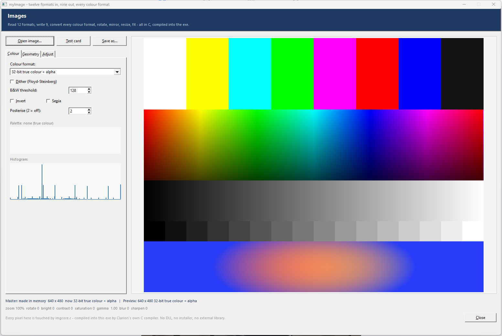
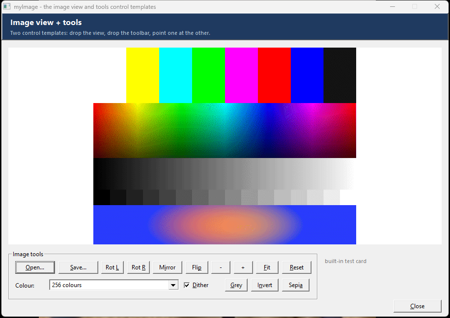
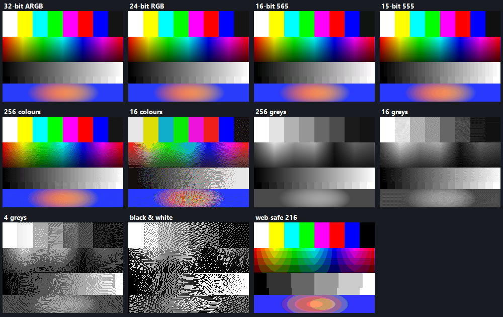

myImage
Twelve image formats in, nine out, every common colour format, and the transforms to go with them — rotate, mirror, flip, crop, resize, fit. The pixel work is C, compiled straight into your exe by Clarion's own C compiler, so there is no DLL to ship and nothing to install.
Doce formatos de imagen de entrada, nueve de salida, todos los formatos de color habituales, y las transformaciones que los acompañan — rotar, espejar, voltear, recortar, redimensionar, encajar. El trabajo con los píxeles es C, compilado directamente en tu exe por el propio compilador C de Clarion, así que no hay DLL que distribuir ni nada que instalar.
12 in · 9 out · 11 colour formats · pure C engine · no DLL 12 entrada · 9 salida · 11 formatos de color · motor en C · sin DLLOverviewResumen
One class, ImageClass, owns one image. Load it from any of twelve formats,
push it through any colour format and any transform, show it in an IMAGE control, and write
it back out as any of nine formats. Three template registrations drive it:
| Registration | Scope | What it does |
|---|---|---|
| myImageGlobal | Application (Global → Extensions) | Adds INCLUDE('ImageClass.INC'),ONCE and, optionally, the shared
ImgWork object that the code template uses. Add it once; the other two require it. |
| myImage | Procedure with a WINDOW | One image object per instance. Loads a file (fixed name, variable, or a built-in test card) when
the window opens, applies the whole recipe you set on the prompts, shows it in an IMAGE
control and optionally saves a copy. Generates Refresh:<Object> and
Show:<Object> routines. It is MULTI — several images per window are fine. |
| myImageView | Drop onto a window (a control template) | Populates an IMAGE control and everything behind it — the picture object, a
master copy and the load / rebuild / show routines. Nothing to wire up. MULTI. |
| myImageTools | Drop onto a window (a control template) | A toolbar — open, save, turn, mirror, flip, zoom, fit, reset, a colour-format list and the effects buttons — wired to a view or to a myImage extension object. |
| myImageConvert | Any embed (a code template) | One file in, one file out, in a single embed: format, colour format, size and JPEG quality, with
an optional result variable. No object to declare — it uses the shared ImgWork. |

├─ myImage.tpl — the template set (register this)
├─ ImageClass.inc — the class (equates + prototypes)
├─ ImageClass.clw — the Clarion side (and the C prototypes)
└─ imgcore.c — the engine, compiled into your exe
examples/myImage/ImageDemo opens anything,
converts it live and saves it back out; examples/myImage/ImgTest is a headless harness that
round-trips all nine writable formats and all eleven colour formats and drops the results in an INI —
useful if you ever want to check the engine on a particular machine.Una clase, ImageClass, es dueña de una imagen. Cárgala desde cualquiera de los
doce formatos, pásala por cualquier formato de color y cualquier transformación, muéstrala en un control
IMAGE y vuelve a escribirla en cualquiera de los nueve formatos de salida. La manejan tres
registros de plantilla:
| Registro | Ámbito | Qué hace |
|---|---|---|
| myImageGlobal | Aplicación (Global → Extensions) | Agrega INCLUDE('ImageClass.INC'),ONCE y, opcionalmente, el objeto compartido
ImgWork que usa la plantilla de código. Ponla una vez; las otras dos la necesitan. |
| myImage | Procedimiento con WINDOW | Un objeto de imagen por instancia. Carga un archivo (nombre fijo, variable, o la carta de ajuste
incorporada) al abrir la ventana, aplica toda la receta que hayas puesto en los prompts, la muestra en
un control IMAGE y opcionalmente guarda una copia. Genera las rutinas
Refresh:<Objeto> y Show:<Objeto>. Es MULTI — varias
imágenes por ventana no son problema. |
| myImageView | Se suelta en una ventana (plantilla de control) | Pone un control IMAGE y todo lo que va detrás — el objeto de imagen, una
copia maestra y las rutinas de carga, reconstrucción y dibujo. No hay que conectar nada. MULTI. |
| myImageTools | Se suelta en una ventana (plantilla de control) | Una barra de herramientas — abrir, guardar, girar, espejar, voltear, zoom, encajar, reiniciar, una lista de formatos de color y los botones de efectos — conectada a una vista o a un objeto de la extensión myImage. |
| myImageConvert | Cualquier embed (plantilla de código) | Un archivo entra, otro sale, en un solo embed: formato, formato de color, tamaño y calidad JPEG,
con una variable de resultado opcional. No hay objeto que declarar — usa el
ImgWork compartido. |
├─ myImage.tpl — el conjunto de plantillas (registra este)
├─ ImageClass.inc — la clase (equates + prototipos)
├─ ImageClass.clw — el lado Clarion (y los prototipos de C)
└─ imgcore.c — el motor, compilado dentro de tu exe
examples/myImage/ImageDemo abre lo que sea, convierte
en vivo y vuelve a guardar; examples/myImage/ImgTest es un banco de pruebas sin ventana que hace
ida y vuelta con los nueve formatos de escritura y los once formatos de color y deja los resultados en un INI
— útil si algún día quieres comprobar el motor en una máquina concreta.Install & registerInstalar y registrar
- Copy
ImageClass.inc,ImageClass.clwandimgcore.cto a folder on the Clarion redirection path — your app folder or\clarion12\libsrc\win. Keep the.incand.clwin ANSI (not UTF-8) with CRLF line ends;imgcore.cis not fussy. - Copy
myImage.tplanywhere convenient (e.g.\clarion12\accessory\template\win) and register it: IDE → Setup → Template Registry → Register → pick the .tpl. - In your app: Global → Extensions → Insert → myImageGlobal (it is also added automatically the first time you add one of the other two).
imgcore.c is compiled into your exe by Clarion's
own C compiler, and the formats Windows already knows are decoded through GDI+, which is part of Windows.
There is no DLL, no import library, no redistributable and no installer step.- Copia
ImageClass.inc,ImageClass.clwyimgcore.ca una carpeta del camino de redirección de Clarion — la carpeta de tu app o\clarion12\libsrc\win. Mantén el.incy el.clwen ANSI (no UTF-8) con finales de línea CRLF;imgcore.cno es exigente. - Copia
myImage.tpldonde te resulte cómodo (por ejemplo\clarion12\accessory\template\win) y regístralo: IDE → Setup → Template Registry → Register → elige el .tpl. - En tu app: Global → Extensions → Insert → myImageGlobal (también se agrega sola la primera vez que insertas una de las otras dos).
imgcore.c lo compila dentro de tu exe el
propio compilador C de Clarion, y los formatos que Windows ya conoce se decodifican con GDI+, que forma parte
de Windows. No hay DLL, ni biblioteca de importación, ni redistribuible, ni paso de instalación.An image on a windowUna imagen en una ventana
- Put an
IMAGEcontrol on the window where the picture should live (no file needed — the template fills it in). - Procedure → Extensions → Insert → myImage - An image on this window.
- Name the object, point Show it in this IMAGE control at your control, and choose what to load: a fixed file name, a variable or expression, or the built-in test card.
- Set the recipe on the Colour, Shape and Save tabs. That is it.
The generated code is plain and readable — here is a real example, from an instance set to load a variable, rotate right, mirror, fit a 320×240 box, warm it up a little, sepia it, reduce it to 256 dithered colours and write a JPEG thumbnail:
Refresh:Photo ROUTINE
IF NOT Photo.LoadFile(GLO:PicturePath)
MESSAGE('Could not read ' & CLIP(GLO:PicturePath), 'Main', ICON:Exclamation)
END
IF Photo.Ok()
Photo.RotateRight()
Photo.Mirror()
Photo.Fit(320, 240, Img:Contain, 0)
Photo.Adjust(10, 0, -20)
Photo.Gamma(2.20)
Photo.Sharpen(60)
Photo.Sepia()
Photo.Convert(Img:Pal256, 1, 128)
END
IF Photo.Ok()
Photo.Quality = 70
Photo.SaveFile(GLO:ThumbPath, Img:Jpeg)
END
DO Show:Photo
Show:Photo ROUTINE
IF Photo.Ok()
Photo.Draw(QuickWindow, ?Preview, Img:Cover, Photo.ArgbOf(16777215))
END
Call DO Refresh:<Object> whenever the source changes (a new file name in your variable,
say) and DO Show:<Object> when you only need a redraw. The window's
EVENT:Sized already calls Show: for you.
- Pon un control
IMAGEen la ventana donde deba ir la imagen (no hace falta archivo — la plantilla lo rellena). - Procedimiento → Extensions → Insert → myImage - An image on this window.
- Dale nombre al objeto, apunta Show it in this IMAGE control a tu control, y elige qué cargar: un nombre de archivo fijo, una variable o expresión, o la carta de ajuste incorporada.
- Configura la receta en las pestañas Colour, Shape y Save. Ya está.
El código generado es sencillo y legible — este es un ejemplo real, de una instancia configurada para cargar una variable, girar a la derecha, espejar, encajar en un cuadro de 320×240, calentarla un poco, aplicarle sepia, reducirla a 256 colores con dither y escribir una miniatura JPEG:
Refresh:Photo ROUTINE
IF NOT Photo.LoadFile(GLO:PicturePath)
MESSAGE('Could not read ' & CLIP(GLO:PicturePath), 'Main', ICON:Exclamation)
END
IF Photo.Ok()
Photo.RotateRight()
Photo.Mirror()
Photo.Fit(320, 240, Img:Contain, 0)
Photo.Adjust(10, 0, -20)
Photo.Gamma(2.20)
Photo.Sharpen(60)
Photo.Sepia()
Photo.Convert(Img:Pal256, 1, 128)
END
IF Photo.Ok()
Photo.Quality = 70
Photo.SaveFile(GLO:ThumbPath, Img:Jpeg)
END
DO Show:Photo
Show:Photo ROUTINE
IF Photo.Ok()
Photo.Draw(QuickWindow, ?Preview, Img:Cover, Photo.ArgbOf(16777215))
END
Llama a DO Refresh:<Objeto> cuando cambie el origen (un nombre de archivo nuevo en tu
variable, por ejemplo) y a DO Show:<Objeto> cuando solo necesites redibujar. El
EVENT:Sized de la ventana ya llama a Show: por ti.
Drop-on controlsControles para soltar
If you would rather not touch the extension at all: drop myImage - Image view on a window and you have a working image. Drop myImage - Image tools panel beside it, point it at the view's IMAGE control, and you have this — open, save, turn, mirror, flip, zoom, fit, reset, every colour format, and the effects:

How the two find each other
The view names everything it declares after its own IMAGE control's field equate — drop it on
a window whose image ends up as ?ImgView and you get ImgView:Master,
ImgView:Pic, ImgView:Mode and the routines ImgView:Load,
ImgView:Rebuild and ImgView:Show. The tools panel asks you for that same IMAGE
control and works the names out the same way. There is no name to type on both sides and nothing to keep in
step, and because the field equate is unique per drop, several views on one window never collide.
Refresh: routine. Useful when the image is
already part of a form you built with the extension.Why nothing degrades
The view keeps two images. The master is the picture as loaded, plus anything permanent you did to it — a turn, a mirror, a zoom, a fit. The working copy is re-derived from the master every time, and the colour format is applied to that copy only. So switching 256 colours → black & white → back to 24-bit costs you nothing: each one starts again from the master. Reduce a picture to 16 colours and then to 256 in any tool that works in place and you can never get the colours back; here you can.
Which buttons appear
Six tick-boxes on the panel's prompts decide: file, turn, zoom, colour list, effects, reset. Anything you untick is hidden when the window opens — the controls stay on the window, so you can turn a group back on later without re-dropping anything.
Si prefieres no tocar la extensión: suelta myImage - Image view en una ventana y ya tienes una imagen funcionando. Suelta myImage - Image tools panel al lado, apúntalo al control IMAGE de la vista, y tienes esto — abrir, guardar, girar, espejar, voltear, zoom, encajar, reiniciar, todos los formatos de color, y los efectos:
Cómo se encuentran los dos
La vista nombra todo lo que declara a partir del field equate de su propio control IMAGE —
suéltala en una ventana donde la imagen acabe siendo ?ImgView y obtienes
ImgView:Master, ImgView:Pic, ImgView:Mode y las rutinas
ImgView:Load, ImgView:Rebuild y ImgView:Show. El panel de herramientas
te pide ese mismo control IMAGE y deduce los nombres igual. No hay ningún nombre que escribir en los dos
lados ni nada que mantener sincronizado, y como el field equate es único por cada soltada, varias vistas en
una misma ventana nunca chocan.
Refresh: generada. Útil cuando la imagen ya forma parte de
un formulario que hiciste con la extensión.Por qué no se degrada nada
La vista guarda dos imágenes. La maestra es la imagen tal como se cargó, más cualquier cosa permanente que le hayas hecho — un giro, un espejo, un zoom, un encaje. La copia de trabajo se vuelve a derivar de la maestra cada vez, y el formato de color se aplica solo a esa copia. Así que pasar de 256 colores → blanco y negro → otra vez a 24 bits no cuesta nada: cada paso vuelve a empezar desde la maestra. Reduce una imagen a 16 colores y luego a 256 en cualquier herramienta que trabaje en el sitio y no recuperas los colores jamás; aquí sí.
Qué botones aparecen
Seis casillas en los prompts del panel lo deciden: archivo, giro, zoom, lista de color, efectos, reinicio. Lo que desmarques se oculta al abrir la ventana — los controles siguen en la ventana, así que puedes volver a activar un grupo más tarde sin soltar nada de nuevo.
Converting filesConvertir archivos
For a straight file-to-file conversion there is nothing to declare and no window involved. Go to any embed, Insert → myImage - Convert an image file, and fill in the source, the target and what you want done. It generates something like this:
ImgWork.Quality = 80
IF ImgWork.LoadFile(LOC:SourceFile)
ImgWork.Convert(Img:Grey256, 0, 128)
ImgWork.Fit(1024, 768, Img:Contain, 0)
LOC:Worked = ImgWork.SaveFile(LOC:TargetFile, Img:Png)
ELSE
LOC:Worked = 0
END
ImgWork.Kill()
Because it is a code template you can drop it in a loop over a file queue and batch-convert a folder, or put it in a browse's after record embed to build thumbnails as you go.
ImgWork is enough and it keeps the embed down to no declarations at all. If that
name clashes with something you already have, untick Declare the shared worker object on the global
extension and use the class directly instead.Para una conversión directa de archivo a archivo no hay nada que declarar ni ventana que valga. Ve a cualquier embed, Insert → myImage - Convert an image file, y rellena el origen, el destino y lo que quieras que haga. Genera algo así:
ImgWork.Quality = 80
IF ImgWork.LoadFile(LOC:SourceFile)
ImgWork.Convert(Img:Grey256, 0, 128)
ImgWork.Fit(1024, 768, Img:Contain, 0)
LOC:Worked = ImgWork.SaveFile(LOC:TargetFile, Img:Png)
ELSE
LOC:Worked = 0
END
ImgWork.Kill()
Como es una plantilla de código, puedes ponerla dentro de un bucle sobre una cola de archivos y convertir una carpeta entera por lotes, o meterla en el embed después de leer el registro de un browse para ir generando miniaturas sobre la marcha.
ImgWork global y así el embed no necesita ninguna declaración.
Si ese nombre choca con algo que ya tienes, desmarca Declare the shared worker object en la extensión
global y usa la clase directamente.Prompt referenceReferencia de prompts
General
| Prompt | Default | Notes |
|---|---|---|
| Object name | Pic<n> | The local object's label — it also names the generated Refresh: and Show: routines. |
| Show it in this IMAGE control | — | Leave it blank to work with the image in code only: handy for converting or thumbnailing with nothing on screen. |
| Load a file | Nothing | Nothing, a fixed file name, a variable/expression (re-read on every Refresh:), or the built-in test card — which is the quickest way to see what a colour format does. |
| Fit | Proportional (pad) | How the picture meets the control: proportional (pad), contain (no pad), cover (crop), stretch, or centred 1:1. |
| Pad / background color | white | Fills the letterbox bars, the corners left by a free rotation, and any canvas you add. |
Colour
| Prompt | Default | Notes |
|---|---|---|
| Convert to | Leave as loaded | Any of the eleven colour formats below. |
| Dither | off | Floyd–Steinberg error diffusion. It costs nothing worth measuring and it transforms how a photo survives 256, 16 or 2 colours. |
| Black & white threshold | 128 | Only used by the 1-bit format when dithering is off. |
| Brightness / Contrast / Saturation | 0 / 0 / 0 | −100 to 100. All three in one pass over the pixels. |
| Gamma | 1.0 | 1 leaves it alone. Worked out as a lookup table in Clarion and applied in C. |
| Blur radius / Sharpen | 0 / 0 | Blur is a separable box, run twice, which is close enough to a gaussian; sharpen is an unsharp mask, 0–300%. |
| Invert / Sepia | off / off | Applied after everything else except the colour format. |
Shape
| Prompt | Default | Notes |
|---|---|---|
| Rotate | No | 90 right, 180, 90 left — exact, lossless, just a pixel move. |
| Mirror / Flip | off / off | Left-to-right and top-to-bottom. |
| Free rotation | 0 | Any angle. The canvas grows so nothing is clipped, and the new corners get the pad colour. Bilinear sampled, so edges stay smooth. |
| Resize to | Leave alone | A fixed width and height, a percentage, or fit a box keeping the ratio. |
| Resample with | Best | Best = area-average when shrinking (no moiré, no lost detail) and bilinear when enlarging. Smooth = bilinear always. Fast = nearest neighbour, which is what you want for pixel art and screenshots. |
Save
Optionally write a copy every time the image is loaded: a file name or expression, the format (or work it out from the extension), JPEG quality, and a forced BMP bit depth if you want one.
General
| Prompt | Por defecto | Notas |
|---|---|---|
| Object name | Pic<n> | La etiqueta del objeto local — también da nombre a las rutinas Refresh: y Show: generadas. |
| Show it in this IMAGE control | — | Déjalo en blanco para trabajar la imagen solo desde código: útil para convertir o hacer miniaturas sin mostrar nada. |
| Load a file | Nothing | Nada, un nombre de archivo fijo, una variable/expresión (se relee en cada Refresh:), o la carta de ajuste incorporada — la forma más rápida de ver qué hace un formato de color. |
| Fit | Proportional (pad) | Cómo encaja la imagen en el control: proporcional (con relleno), contain (sin relleno), cover (recortando), estirada, o centrada 1:1. |
| Pad / background color | blanco | Rellena las bandas del encuadre, las esquinas que deja una rotación libre, y cualquier lienzo que añadas. |
Colour
| Prompt | Por defecto | Notas |
|---|---|---|
| Convert to | Leave as loaded | Cualquiera de los once formatos de color de más abajo. |
| Dither | off | Difusión de error Floyd–Steinberg. No cuesta nada apreciable y cambia por completo cómo aguanta una foto a 256, 16 o 2 colores. |
| Black & white threshold | 128 | Solo lo usa el formato de 1 bit cuando el dither está apagado. |
| Brightness / Contrast / Saturation | 0 / 0 / 0 | De −100 a 100. Los tres en una sola pasada sobre los píxeles. |
| Gamma | 1.0 | 1 lo deja tal cual. Se calcula como tabla de consulta en Clarion y se aplica en C. |
| Blur radius / Sharpen | 0 / 0 | El desenfoque es una caja separable aplicada dos veces, que se parece bastante a una gaussiana; el enfoque es una máscara de desenfoque, 0–300%. |
| Invert / Sepia | off / off | Se aplican después de todo lo demás salvo el formato de color. |
Shape
| Prompt | Por defecto | Notas |
|---|---|---|
| Rotate | No | 90 a la derecha, 180, 90 a la izquierda — exacto, sin pérdida, solo mover píxeles. |
| Mirror / Flip | off / off | De izquierda a derecha y de arriba a abajo. |
| Free rotation | 0 | Cualquier ángulo. El lienzo crece para que no se recorte nada, y las esquinas nuevas toman el color de relleno. Se muestrea bilinealmente, así que los bordes quedan suaves. |
| Resize to | Leave alone | Un ancho y alto fijos, un porcentaje, o encajar en un cuadro conservando la proporción. |
| Resample with | Best | Best = promedio por área al reducir (sin muaré ni detalle perdido) y bilineal al ampliar. Smooth = bilineal siempre. Fast = vecino más cercano, que es lo que quieres para pixel art y capturas de pantalla. |
Save
Opcionalmente escribe una copia cada vez que se carga la imagen: un nombre de archivo o expresión, el formato (o dedúcelo de la extensión), la calidad JPEG, y una profundidad de BMP forzada si la quieres.
Driving it from codeManejarlo desde código
The object is ordinary procedure data, so you never have to go through the prompts at all:
Pic ImageClass ! thumbnail a folder of photos into 256-colour GIFs IF Pic.LoadFile(LOC:Source) Pic.Fit(240, 240, Img:Contain) ! keep the ratio, no padding Pic.Sharpen(60) ! shrinking always softens a little Pic.Convert(Img:Pal256, 1) ! 256 colours, dithered Pic.SaveFile(LOC:Target, Img:Gif) END ! a 1-bit fax-style copy of a scan, dithered Pic.LoadFile('scan.tif') Pic.Greyscale(Img:Luma) Pic.Convert(Img:Mono, 1) Pic.SaveFile('scan.pbm') ! PNM writes P4 when the image is 1-bit ! read the frames of an animated GIF IF Pic.LoadFile('spinner.gif') LOOP i = 0 TO Pic.Frames() - 1 Pic.LoadFrame(i) Pic.SaveFile('frame' & i & '.png') END END
El objeto es un dato normal del procedimiento, así que no tienes por qué pasar por los prompts:
Pic ImageClass ! miniaturas de una carpeta de fotos como GIF de 256 colores IF Pic.LoadFile(LOC:Source) Pic.Fit(240, 240, Img:Contain) ! conserva la proporción, sin relleno Pic.Sharpen(60) ! reducir siempre ablanda un poco Pic.Convert(Img:Pal256, 1) ! 256 colores, con dither Pic.SaveFile(LOC:Target, Img:Gif) END ! una copia de 1 bit tipo fax de un escaneo, con dither Pic.LoadFile('scan.tif') Pic.Greyscale(Img:Luma) Pic.Convert(Img:Mono, 1) Pic.SaveFile('scan.pbm') ! PNM escribe P4 si la imagen es de 1 bit ! recorrer los fotogramas de un GIF animado IF Pic.LoadFile('spinner.gif') LOOP i = 0 TO Pic.Frames() - 1 Pic.LoadFrame(i) Pic.SaveFile('frame' & i & '.png') END END
File formatsFormatos de archivo
| Format | Equate | Read | Write | Notes |
|---|---|---|---|---|
| BMP | Img:Bmp | yes | yes | Written by us, so it can be 1, 4, 8, 24 or 32-bit — the depth follows the colour format unless you force it. (GDI+ only ever writes 24/32.) |
| GIF | Img:Gif | yes | yes | Animated files report Frames(); step through them with LoadFrame(). |
| JPEG | Img:Jpeg | yes | yes | Quality 1–100, default 85. |
| PNG | Img:Png | yes | yes | Alpha survives the whole pipeline. |
| TIFF | Img:Tiff | yes | yes | Multi-page files report Frames() too. |
| ICO / CUR | Img:Ico | yes | — | Loads the largest image in the file. |
| EMF / WMF | Img:Emf Img:Wmf | yes | — | Rasterised at its natural size on load. |
| TGA | Img:Tga | yes | yes | Ours. Reads 8/15/16/24/32-bit, raw or RLE, palette or greyscale, either row order. Writes 32-bit, RLE by default (Quality = 0 writes it raw). |
| PCX | Img:Pcx | yes | yes | Ours. Reads 1–8 bit, 1–4 planes, EGA and VGA palettes. Writes 24-bit RLE. |
| PNM | Img:Pnm | yes | yes | Ours. Reads all six flavours (P1–P6, ASCII and binary). Writes P4 for 1-bit, P5 for greyscale and P6 otherwise — it picks by itself. |
| QOI | Img:Qoi | yes | yes | Ours. The "Quite OK Image" format: lossless, no dependencies, encodes and decodes very fast. |
LoadFile works out the format from the file's signature, not its extension, so a
mislabelled file still opens. SaveFile uses the extension unless you name a format.
FormatOfFile() tells you what a file is without decoding it.
| Formato | Equate | Lee | Escribe | Notas |
|---|---|---|---|---|
| BMP | Img:Bmp | sí | sí | Lo escribimos nosotros, así que puede ser de 1, 4, 8, 24 o 32 bits — la profundidad sigue al formato de color salvo que la fuerces. (GDI+ solo escribe 24/32.) |
| GIF | Img:Gif | sí | sí | Los animados informan de Frames(); recórrelos con LoadFrame(). |
| JPEG | Img:Jpeg | sí | sí | Quality de 1 a 100, 85 por defecto. |
| PNG | Img:Png | sí | sí | El alfa sobrevive a toda la cadena. |
| TIFF | Img:Tiff | sí | sí | Los de varias páginas también informan de Frames(). |
| ICO / CUR | Img:Ico | sí | — | Carga la imagen más grande del archivo. |
| EMF / WMF | Img:Emf Img:Wmf | sí | — | Se rasteriza a su tamaño natural al cargar. |
| TGA | Img:Tga | sí | sí | Nuestro. Lee 8/15/16/24/32 bits, en crudo o RLE, con paleta o en gris, en cualquier orden de filas. Escribe 32 bits, RLE por defecto (Quality = 0 lo escribe en crudo). |
| PCX | Img:Pcx | sí | sí | Nuestro. Lee de 1 a 8 bits, de 1 a 4 planos, paletas EGA y VGA. Escribe 24 bits con RLE. |
| PNM | Img:Pnm | sí | sí | Nuestro. Lee las seis variantes (P1–P6, ASCII y binaria). Escribe P4 si es de 1 bit, P5 si es gris y P6 en los demás casos — lo elige solo. |
| QOI | Img:Qoi | sí | sí | Nuestro. El formato "Quite OK Image": sin pérdida, sin dependencias, codifica y decodifica muy rápido. |
LoadFile deduce el formato de la firma del archivo, no de su extensión, así que un
archivo mal etiquetado igualmente se abre. SaveFile usa la extensión salvo que le indiques un
formato. FormatOfFile() te dice qué es un archivo sin decodificarlo.
Colour formatsFormatos de color
All eleven, converted from the built-in test card. Look at what dithering does at 16 colours and at 1 bit, and at the banding you would expect from 16- and 15-bit:

| Colour format | Equate | What you get |
|---|---|---|
| 32-bit true colour + alpha | Img:True32 | Everything kept, transparency included. This is what an image is held as internally. |
| 24-bit true colour | Img:True24 | Alpha discarded (every pixel becomes opaque). |
| 16-bit high colour | Img:High16 | 5-6-5. Optional ordered dither takes the edge off the banding in gradients. |
| 15-bit high colour | Img:High15 | 5-5-5. |
| 256 colours | Img:Pal256 | A palette built for this image by median cut, then every pixel mapped to its nearest entry. |
| 16 colours | Img:Pal16 | The same, down to 16. Dithering matters a lot here. |
| 256 / 16 / 4 greys | Img:Grey256 Img:Grey16 Img:Grey4 | Luma-weighted, then reduced to 256, 16 or 4 levels. |
| Black & white | Img:Mono | 1 bit. Either a straight threshold or Floyd–Steinberg — and the difference is night and day on a photograph. |
| Web-safe 216 | Img:Web216 | The old 6×6×6 cube, for when something downstream insists on it. |
Colors() returns how
many palette entries are in use and PaletteEntry(i) hands you each one — the demo draws
them as swatches.Los once, convertidos desde la carta de ajuste incorporada. Fíjate en lo que hace el dither a 16 colores y a 1 bit, y en el bandeado que cabe esperar de 16 y 15 bits:
| Formato de color | Equate | Qué obtienes |
|---|---|---|
| 32-bit true colour + alpha | Img:True32 | Todo se conserva, transparencia incluida. Así es como se guarda una imagen internamente. |
| 24-bit true colour | Img:True24 | Se descarta el alfa (cada píxel queda opaco). |
| 16-bit high colour | Img:High16 | 5-6-5. Un dither ordenado opcional le quita filo al bandeado de los degradados. |
| 15-bit high colour | Img:High15 | 5-5-5. |
| 256 colores | Img:Pal256 | Una paleta hecha a medida de esta imagen por corte medio, y luego cada píxel llevado a su entrada más cercana. |
| 16 colores | Img:Pal16 | Lo mismo, hasta 16. Aquí el dither importa muchísimo. |
| 256 / 16 / 4 grises | Img:Grey256 Img:Grey16 Img:Grey4 | Ponderados por luminancia y luego reducidos a 256, 16 o 4 niveles. |
| Blanco y negro | Img:Mono | 1 bit. Umbral directo o Floyd–Steinberg — y en una fotografía la diferencia es abismal. |
| Web-safe 216 | Img:Web216 | El viejo cubo de 6×6×6, por si algo más adelante lo exige. |
Colors() devuelve cuántas entradas de paleta se usan y PaletteEntry(i) te da cada
una — el demo las dibuja como muestras de color.ImageClass APIAPI de ImageClass
Every method returns 1 when it worked and 0 when it did not; LastError() explains a 0. An
object owns one image and frees it in its Destruct, so there is nothing to clean up by hand.
Open, make, close
| Member | Meaning |
|---|---|
LoadFile(path) | Read any of the twelve formats. The format comes from the file signature. |
LoadFrame(n) | Select frame n (0-based) of an animated GIF or multi-page TIFF. |
MakeImage(w, h, argb) | A new image of a solid colour. |
TestCard(w, h) | The built-in colour bars / hue sweep / grey ramp card. |
CloneInto(other) | Copy this image into another ImageClass object. |
Kill() | Release the image now rather than at Destruct. |
What have we got
| Member | Meaning |
|---|---|
Ok(), Wide(), High() | Is there an image, and how big. |
SrcFormat(), SrcDepth() | What the file was: format equate and bits per pixel. |
ColorMode(), Colors() | The colour format now, and how many palette entries are in use. |
Frames() | Frames in an animated GIF or pages in a TIFF. |
FormatName(), ColorModeName(), Describe() | Ready-to-show text; Describe() is a one-liner for a status bar. |
Pixel(x,y), SetPixel(x,y,argb), PaletteEntry(i) | Single pixels and palette entries, as 0xAARRGGBB. |
Histogram(), HistogramBin(i) | Build the luma histogram (returns the tallest bin) then read bins 0–255. |
FormatOfFile(path), FormatFromExt(path), CanWrite(fmt), Extensions(fmt) | Format helpers; Extensions() gives you a FILEDIALOG mask. |
Shape
| Member | Meaning |
|---|---|
RotateRight(), RotateLeft(), Rotate180() | Exact quarter turns. |
Rotate(degrees, back, grow, smooth) | Any angle. grow expands the canvas so nothing is clipped; smooth samples bilinearly. |
Mirror(), FlipVert() | Left-to-right, top-to-bottom. |
Resize(w, h, filter), Zoom(percent, filter) | Filters: Img:Fast, Img:Smooth, Img:Best. |
Fit(w, h, mode, back), Thumbnail(box) | Modes: Img:Stretch, Img:Proportional, Img:Cover, Img:Centered, Img:Contain. |
Crop(x, y, w, h), CanvasSize(w, h, anchor, back) | Cut down, or grow the canvas around the image (nine anchors). |
Colour and tone
| Member | Meaning |
|---|---|
Convert(mode, dither, threshold) | Any of the eleven colour formats. |
Greyscale(mode), BlackWhite(threshold, dither) | Weightings: Img:Luma, Img:Average, Img:Lightness, Img:Luma709. |
Adjust(bright, contrast, saturation) | All three in one pass, each −100 to 100. |
Gamma(g), Levels(inLo, inHi, outLo, outHi), ApplyLut(lut, channels) | The first two build a 256-byte table and hand it to the third — write your own table for curves. |
Invert(), Sepia(), Posterize(levels) | The quick ones. |
Blur(radius, passes), Sharpen(amount) | Box blur (2 passes ≈ gaussian) and unsharp mask. |
Flatten(back), Opacity(percent) | Composite the alpha onto a colour, or scale it. |
Combine and show
| Member | Meaning |
|---|---|
DrawOnto(src, x, y, w, h, alpha) | Composite another image onto this one — watermarks, badges, contact sheets. |
Draw(window, ?image, fit, back) | Show it in an IMAGE control. A copy is fitted to the control, so the image itself is never touched. |
SaveFile(path, fmt), SaveTemp() | Write it out; SaveTemp() drops a PNG in %TEMP% and returns the path. |
Quality, BmpBits | JPEG quality (default 85) and a forced BMP depth (0 = follow the colour format). |
ArgbOf(clarionColor, alpha) | Clarion colours are BGR longs; the engine wants 0xAARRGGBB. This converts. |
Cada método devuelve 1 si funcionó y 0 si no; LastError() explica un 0. Un objeto es dueño de
una imagen y la libera en su Destruct, así que no hay nada que limpiar a mano.
Abrir, crear, cerrar
| Miembro | Significado |
|---|---|
LoadFile(path) | Lee cualquiera de los doce formatos. El formato sale de la firma del archivo. |
LoadFrame(n) | Selecciona el fotograma n (desde 0) de un GIF animado o un TIFF de varias páginas. |
MakeImage(w, h, argb) | Una imagen nueva de un color liso. |
TestCard(w, h) | La carta incorporada de barras de color, barrido de tono y rampa de grises. |
CloneInto(otro) | Copia esta imagen en otro objeto ImageClass. |
Kill() | Libera la imagen ya, en vez de esperar al Destruct. |
Qué tenemos
| Miembro | Significado |
|---|---|
Ok(), Wide(), High() | Si hay imagen, y de qué tamaño. |
SrcFormat(), SrcDepth() | Qué era el archivo: equate de formato y bits por píxel. |
ColorMode(), Colors() | El formato de color actual, y cuántas entradas de paleta se usan. |
Frames() | Fotogramas de un GIF animado o páginas de un TIFF. |
FormatName(), ColorModeName(), Describe() | Texto listo para mostrar; Describe() cabe en una línea de estado. |
Pixel(x,y), SetPixel(x,y,argb), PaletteEntry(i) | Píxeles sueltos y entradas de paleta, como 0xAARRGGBB. |
Histogram(), HistogramBin(i) | Construye el histograma de luminancia (devuelve la barra más alta) y luego lee las barras 0–255. |
FormatOfFile(path), FormatFromExt(path), CanWrite(fmt), Extensions(fmt) | Ayudas de formato; Extensions() te da una máscara para FILEDIALOG. |
Forma
| Miembro | Significado |
|---|---|
RotateRight(), RotateLeft(), Rotate180() | Cuartos de vuelta exactos. |
Rotate(grados, fondo, crecer, suave) | Cualquier ángulo. crecer agranda el lienzo para no recortar nada; suave muestrea bilinealmente. |
Mirror(), FlipVert() | De izquierda a derecha, de arriba a abajo. |
Resize(w, h, filtro), Zoom(porcentaje, filtro) | Filtros: Img:Fast, Img:Smooth, Img:Best. |
Fit(w, h, modo, fondo), Thumbnail(cuadro) | Modos: Img:Stretch, Img:Proportional, Img:Cover, Img:Centered, Img:Contain. |
Crop(x, y, w, h), CanvasSize(w, h, ancla, fondo) | Recorta, o agranda el lienzo alrededor de la imagen (nueve anclas). |
Color y tono
| Miembro | Significado |
|---|---|
Convert(modo, dither, umbral) | Cualquiera de los once formatos de color. |
Greyscale(modo), BlackWhite(umbral, dither) | Ponderaciones: Img:Luma, Img:Average, Img:Lightness, Img:Luma709. |
Adjust(brillo, contraste, saturación) | Los tres en una pasada, cada uno de −100 a 100. |
Gamma(g), Levels(inLo, inHi, outLo, outHi), ApplyLut(lut, canales) | Los dos primeros construyen una tabla de 256 bytes y se la pasan al tercero — escribe tu propia tabla para hacer curvas. |
Invert(), Sepia(), Posterize(niveles) | Los rápidos. |
Blur(radio, pasadas), Sharpen(cantidad) | Desenfoque de caja (2 pasadas ≈ gaussiana) y máscara de desenfoque. |
Flatten(fondo), Opacity(porcentaje) | Compone el alfa sobre un color, o lo escala. |
Combinar y mostrar
| Miembro | Significado |
|---|---|
DrawOnto(origen, x, y, w, h, alfa) | Compone otra imagen sobre esta — marcas de agua, distintivos, hojas de contactos. |
Draw(ventana, ?image, encaje, fondo) | La muestra en un control IMAGE. Se encaja una copia al control, así que la imagen en sí nunca se toca. |
SaveFile(path, fmt), SaveTemp() | Escribe el archivo; SaveTemp() deja un PNG en %TEMP% y devuelve la ruta. |
Quality, BmpBits | Calidad JPEG (85 por defecto) y profundidad de BMP forzada (0 = seguir al formato de color). |
ArgbOf(colorClarion, alfa) | Los colores de Clarion son longs BGR; el motor quiere 0xAARRGGBB. Esto lo convierte. |
How the engine worksCómo funciona el motor
Worth knowing if you ever need to extend it, or to satisfy yourself about what ends up in your exe.
Who does what
GDI+ does exactly two jobs: decoding the eight formats Windows already owns (BMP, GIF, JPEG, PNG,
TIFF, ICO, EMF, WMF) and encoding PNG, JPEG, GIF and TIFF. It is bound at run time with
LoadLibrary + GetProcAddress, so nothing is linked and nothing is redistributed —
gdiplus.dll is part of Windows.
Everything else is plain C in imgcore.c: the TGA, PCX, PNM, QOI and BMP codecs, the
quantiser, the dithering, every resample, every rotation and every adjustment. That is why the behaviour is
identical on every machine and why the odd formats work at all.
No C runtime, no libm
Clarion's C compiler gives you neither, so the engine asks for neither. Memory comes from
LocalAlloc, files from CreateFileA/ReadFile/WriteFile, and
the handful of helpers it needs (a memcpy, a memset, a strlen) are written out. Anything that would need
sin, cos or pow is worked out in Clarion and handed across:
free rotation receives a cosine and a sine, and gamma and levels arrive as a finished 256-byte lookup table.
It is a good division — Clarion is perfectly quick at doing something 256 times, and hopeless at doing
it two million times.
One buffer, no copies
An image is held as 32-bit B,G,R,A — the byte order of GDI+'s 32bppARGB — so
GdipCreateBitmapFromScan0 can wrap a GDI+ bitmap straight over our own buffer. Decoding draws
into it and encoding reads out of it, and neither direction ever copies the pixels.
Reducing colours
Palettes are built by median cut: the colours are counted into a 32×32×32 histogram, the box holding the most pixels is split along its longest axis at the population median, and that repeats until there are as many boxes as you asked for colours. Each box then contributes its population-weighted average. Mapping pixels to that palette is cached on the same 5-5-5 cell, so it costs one lookup per pixel after the first of its kind. Dithering is Floyd–Steinberg, in colour for palettes and on the luma plane for greys and black & white.
Conviene saberlo si algún día quieres extenderlo, o para quedarte tranquilo sobre lo que acaba dentro de tu exe.
Quién hace qué
GDI+ hace exactamente dos trabajos: decodificar los ocho formatos que Windows ya conoce (BMP, GIF,
JPEG, PNG, TIFF, ICO, EMF, WMF) y codificar PNG, JPEG, GIF y TIFF. Se enlaza en tiempo de ejecución con
LoadLibrary + GetProcAddress, así que no se enlaza ni se distribuye nada —
gdiplus.dll forma parte de Windows.
Todo lo demás es C puro dentro de imgcore.c: los códecs de TGA, PCX, PNM, QOI y BMP, el
cuantizador, el dither, cada remuestreo, cada rotación y cada ajuste. Por eso el comportamiento es idéntico en
cualquier máquina y por eso los formatos raros funcionan siquiera.
Sin runtime de C, sin libm
El compilador C de Clarion no te da ninguno de los dos, así que el motor no pide ninguno. La memoria sale de
LocalAlloc, los archivos de CreateFileA/ReadFile/WriteFile,
y las pocas ayudas que necesita (un memcpy, un memset, un strlen) están escritas a mano. Cualquier cosa que
necesitaría sin, cos o pow se calcula en Clarion y se pasa al
otro lado: la rotación libre recibe un coseno y un seno, y el gamma y los niveles llegan como una tabla de
consulta de 256 bytes ya hecha. Es un buen reparto — Clarion es perfectamente rápido haciendo algo 256
veces, y desastroso haciéndolo dos millones de veces.
Un solo búfer, sin copias
Una imagen se guarda como 32 bits B,G,R,A — el orden de bytes del 32bppARGB de GDI+ —, así
que GdipCreateBitmapFromScan0 puede envolver un bitmap de GDI+ directamente sobre nuestro propio
búfer. Al decodificar se dibuja dentro y al codificar se lee de ahí, y en ninguna de las dos direcciones se
copian los píxeles.
Reducir colores
Las paletas se construyen por corte medio: los colores se cuentan en un histograma de 32×32×32, la caja con más píxeles se parte por su eje más largo en la mediana de población, y eso se repite hasta tener tantas cajas como colores pediste. Después cada caja aporta su promedio ponderado por población. La correspondencia de píxeles con esa paleta se cachea en la misma celda 5-5-5, así que cuesta una consulta por píxel a partir del primero de su clase. El dither es Floyd–Steinberg, en color para las paletas y sobre el plano de luminancia para los grises y el blanco y negro.
TroubleshootingSolución de problemas
| Symptom | Cause / fix |
|---|---|
| "File not found: ImageClass.INC" at compile | The three files are not on the redirection path — copy ImageClass.inc, ImageClass.clw and imgcore.c beside the app or into \clarion12\libsrc\win. imgcore.c is easy to forget: without it the class compiles and the link fails. |
| "Illegal data type: IMAGECLASS" | Classic sign that ImageClass.inc was saved with LF line ends (or as UTF-8). Save it as ANSI with CRLF. |
| Template will not register | Same thing for the .tpl: keep it ANSI/CRLF. |
LoadFile returns 0 | Check LastError(): 41 = the file could not be read at all (name, path, locked); 200+n = GDI+ refused it (n is its status); 12 = all 32 image handles are in use, so something is not calling Kill(). |
| Nothing shows in the IMAGE control | Draw() needs the control to have a real size — below 4 pixels either way it gives up. Also make sure you passed the same window the control lives on. |
| The picture is stretched or cropped oddly | That is the Fit prompt. Proportional pads, cover crops, contain does neither, stretch ignores the ratio. |
| A shrunk photo looks soft | It always does — that is what area-averaging is. Add a little Sharpen (60–100) after the resize. |
| 256 colours looks blotchy | Turn Dither on. Without it, flat areas band; with it, they do not. |
| Saving to GIF gives more colours than expected | GIF is written by GDI+, which quantises on its own. To control the palette yourself, Convert(Img:Pal256, 1) first — then what you saw is what you get. |
| The colours came out wrong | Clarion colours are BGR longs and the engine takes 0xAARRGGBB. Use ArgbOf() to cross between them. |
| Síntoma | Causa / solución |
|---|---|
| "File not found: ImageClass.INC" al compilar | Los tres archivos no están en el camino de redirección — copia ImageClass.inc, ImageClass.clw y imgcore.c junto a la app o dentro de \clarion12\libsrc\win. imgcore.c es fácil de olvidar: sin él la clase compila y falla el enlazado. |
| "Illegal data type: IMAGECLASS" | Señal clásica de que ImageClass.inc se guardó con finales de línea LF (o como UTF-8). Guárdalo en ANSI con CRLF. |
| La plantilla no se registra | Lo mismo para el .tpl: mantenlo en ANSI/CRLF. |
LoadFile devuelve 0 | Mira LastError(): 41 = no se pudo leer el archivo (nombre, ruta, bloqueado); 200+n = GDI+ lo rechazó (n es su estado); 12 = los 32 manejadores de imagen están ocupados, así que algo no está llamando a Kill(). |
| No aparece nada en el control IMAGE | Draw() necesita que el control tenga tamaño real — por debajo de 4 píxeles en cualquier lado se rinde. Comprueba también que pasaste la ventana en la que está el control. |
| La imagen sale estirada o recortada de forma rara | Eso es el prompt Fit. Proportional rellena, cover recorta, contain no hace ninguna de las dos, y stretch ignora la proporción. |
| Una foto reducida se ve blanda | Siempre pasa — es lo que hace el promedio por área. Añade un poco de Sharpen (60–100) después de redimensionar. |
| A 256 colores se ve a manchas | Activa el Dither. Sin él las zonas planas hacen bandas; con él, no. |
| Guardar en GIF da más colores de los esperados | El GIF lo escribe GDI+, que cuantiza por su cuenta. Para controlar tú la paleta, haz antes Convert(Img:Pal256, 1) — y entonces lo que viste es lo que obtienes. |
| Los colores salieron mal | Los colores de Clarion son longs BGR y el motor toma 0xAARRGGBB. Usa ArgbOf() para pasar de unos a otros. |